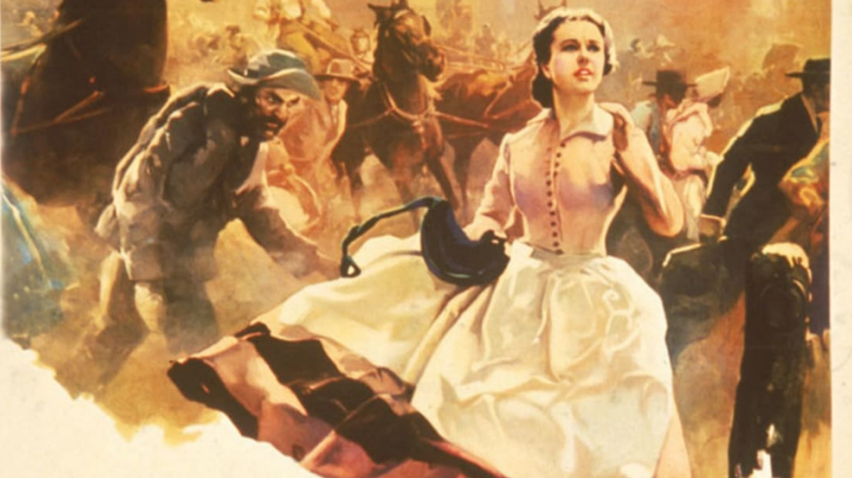

A hideous blue spills from all corners of the summer sky and your clothes are soaked in it. You try hard not to think about how the fabric feels like tiny pins against your skin. Yesterday you told yourself that maybe you can live amid the absence of home-shaped gentleness, today you tell yourself that tenderness is just another old star you can get used to choking on. But have you ever been at your lowest, your whole sense of normal stripped apart and given a new name, and you are required not only to embrace it but also to strive through it and forget everything you based your life upon? What would you do when every shred of your belief is torn apart? When the one God you believed in never decides to show up? You just close your eyes and convince yourself that now he’s in front of you. For me, if there exists hope, there exists God but when rising from the depths of death was never possible, hope and with that the God it attaches itself to remain doomed.
‘Gone with the wind’ is a vivid reflection of one of the similar glamorous summer skies, the same days filled with drenched bodies covered in pointy fabric of memories which struggles more and more through the past and gets created and destroyed mercilessly to find its feet in the present again, all jotted in ink (possibly red), parallel to the protagonist of the story passionately embodying this same world. Rising, breathing, and falling with it. The whole book is merely a point of view of 1850s girls before and after, from Barbie’s World to Deathly Hallows.
War had never been the most gorgeous thing. It burns, not just people but relations, pens, papers too. Unlike the certain beauty of a rainbow, the pain it brings is unknown to us. The 1850s were no different. The winning flags were hoisting, the victory songs were being sung, even the opposing army was 22 miles behind, they were dancing away in their southern courtesies and telling their children stories of how the general was already hoisting their flag. This is what the Civil war was for the southern aristocrats who had mighty held themselves in such regards that on every signal of flight they dived deeper in for a fight. It was different for every southerner and they all embraced it in their own particular way. Forever in love with a memory, most of them became skeletons with hollow bones. With the gust of life snatched away, they were still people but what was left inside was just fog. They became ghosts, standing there with nothing left to add. Ashley Wilkes, one of the main characters of the story is the personification of a past and people who refuse to move forward and surrender themselves to a fate of eternal want. And yet with each different route, all that stays common is hope and the instinct to survive. And so comes Darwin in play and the single point of beauty of the book. A lot of writers scatter their plot by describing the urgent scenes but that’s not the case with this one. It shows everything from a single scarlett point of view, omitting scenes which could’ve been given primary importance. Margaret shows the anxious waiting scene for those who went away and didn’t even bother to describe the people in war. All she shows is a change in mindset of a single girl.


Scarlett’ O’hara, the headstrong protagonist around whom the book as well as the world revolves goes through a multitude of shades, but it all gets overshadowed by the constant obsession for a guy she couldn’t have. And like the very purpose of obsession, it engulfs her enough to forget about her natural trait. An obsession that defied her very core of selfishness, and for this one fiery want, she is a character with a want to be selfless. The same obsession can be seen in her when it comes to Tara (her home), and with the thoughts that whisper the obsession into her mind that she needs to be like her mother. With every next decision made, the Irish blood of her father just flowed thicker.
The book has always received a lot of criticism alongside the fame due to it’s unusual take on sensitive topics which are usually not as distinctively available in mainstream literature. The whole plot seems absurd at points, as being almost raped and having the knowledge of the possibility of the death of her husband, Scarlett still only can think about her teenage crush, Ashley Wilkes. Every decision she takes is driven by her insanity for this one person. The first time Scarlett had to question her morals, she instantly remembered her mother and the fear of disappointment but later it came with ease. She is ready to toss away everything she gained just to monopolise him in her life. The decisions to make Scarlette a distinct character sometimes seem unnatural, and oftentimes forced. Another unusual style used is making the protagonist unlikeable and yet admirable. Almost as if her hands were made for violence and never for holding. Repeatedly, Scarlett’s decisions are compared and contrasted to southern virtues by a remembrance of her mother who taught her to grow up in a society that no longer existed. It all seems as if it fits just like a coincidence, but pure conscience is like virginity, you lose it once and then the guilt stops bothering you.
The whole book in a literary sense is written in a way of a classic but calling it one would be a shame. It is racist to the core and justifies racism and its acceptance with pride. It even shows the slaves taking pride in being directionless without a ‘master’. When Big Sam meets Scarlett and asks her to let him go back to Tara, when everyone at Tara lost Gerald and a tide of relief came as Scarlett took charge because frankly, they were clueless what to do and how without being ordered about it. It almost seems as if the writer herself had a secret crush for racism. As if she sees the rot and chooses to stay , as if she stays and lets it be.
The intimacy of the main characters is a plethora of constant war. Fight and war is how Rhett and Scarlett begin and end, with a kiss that fills up with blood until there’s no place left for tenderness or language. They carry it forever like a shame in their mouths until it’s all they taste till they hurl broken glasses at each other.
“Sir, you are no gentleman”
That’s Rhett , mystifying but also if put simply, a self centered man. Margaret tries to put in the Yankee viewpoint through this character and embodies it as a logical explanation of every hatred and crime. The whole book seemed to take up everything wrong that happened historically and bend it in a way so as to give it a glamorous defence. The Ku Klux Klan, a mob of people that developed during the civil war, carrying out murders against innocent people in the name of racial power was shown to be on the good side of ethics, the whole explanation being that they did what they did to save themselves and the women. I wouldn’t go so far as to say that lies were fed ,there are things you want to believe in but doubt is tangible and easier to trust so instead of lies we call it far stretched truth.

However, the whole book feels the same way as a half of a whole, as if something inexplicable should’ve been added. It did not make me feel full, nor was I rethinking my life, you don’t hope for a better end and you certainly don’t get a proper middle. You don’t go to bed with your lungs aflame, gasping for belonging.
Through this whole thing, the end is rather satisfying even if abrupt.
“Oh, I shall have to stay here for a while
In glassy water, in a seaweed net,
until this fact and I are reconciled:
I wasn’t loved, it’s as simple as that.”
You don’t read a whole long novel just to end it with ‘well that’s it.’ It almost was like the writer was bored of her own story and decided to kill the plot and with it, all the characters too. The satisfying part of it was the defeat and the dialogues of the characters, they were strong, crusty and terrifying. Rhett’s famous ‘ frankly, my dear, I don’t give a damn.’ rings in your head and is one of the most famous dialogues to be used in early Hollywood cinema. He says it with an acceptance that makes both Scarlett and him losers in the game of love.
In conclusion, there’s not much left to fall into or consumed by, the only thing left is a facade if you choose to ignore the deafening silence. It ends as if you are supposed to learn a lesson from it but there’s none.